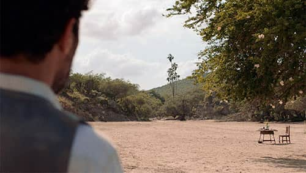
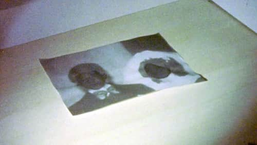

La Baja Inspira
Una sección que nació en 2021 con el objetivo de colocar los reflectores sobre películas que tengan fuertes vínculos con la región de La Baja, y así buscar que las nuevas generaciones encuentren sus historias, sus imágenes e inspiración en este territorio sin igual.
Películas que han sido reconocidas en esta categoría:
2022
Por los viejos tiempos
Dir. Paula Natalia de Anda Vargas | México
Premio La Baja Inspira by CECC
2022
Ir y volver
Dir. José Permar | México, Bélgica, Hungría
Premio Shalala - Firepit
2021

La recua
Dirs. Trudi Angell y Darío Higuera Meza | México, Estados Unidos
Premio La Baja Inspira by CECC